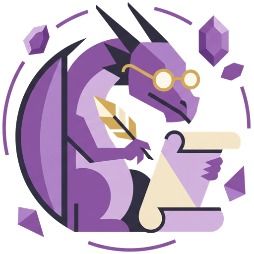

Getting Started
Bringing in (or creating) a character, logging games, trading, shopping, and keeping your data safe — the everyday stuff, in the order you'll actually use it.
Everything in AMAnuensis lives only in your browser — there's no account and no server. That makes backups important; see the last section. The app has more tools than what's below (magic item prep, spell copying, printable reports…), but this covers what you'll touch most sessions.
Already playing? Import your history
Most players already have some history somewhere — you probably don't need to start from zero. Two shortcuts on the Characters screen:
- Import AL Log — you've been logging games on adventurersleaguelog.com. Pick your exported CSV (one file per character).
- Import CSV Log — your history lives somewhere else entirely: a personal spreadsheet, any other CSV export the app has never seen before.
Both work the same way: pick your file, and AMAnuensis converts it into a brand-new character with all its logs. Import AL Log knows the site's format well enough to offer an instant offline conversion (✨ Quick Import), but for anything trickier — or for Import CSV Log, which has to work out formats it's never seen — the more accurate path is 🤖 Use an AI Chatbot: click it, copy the prepared instructions (your file's contents are included), paste them into any AI chatbot you already use (ChatGPT, Claude, Gemini…), and paste its reply back in.
Starting fresh: create your character
Already imported a character in Step 1? Skip to Step 4.
On the Characters screen, click + New Character and enter a name, species, and class — species/class are just labels you type, nothing mechanical depends on them.
A brand-new character starts at Level 1 with 0 GP and an empty inventory — everything else comes from logs you add. So the very next thing you do is add your first log.
Starting fresh: your first log (Starting Log)
Already imported a character in Step 1? Skip to Step 4.
Open the character, click + Add Log, then pick the Starting Log tab. This is where you record how the character began:
- Starting level — most tables start at 1, but pick higher if yours allows starting further along (some AL rules grant extra downtime, or even a free magic item, at higher starting levels — there are fields for both).
- Background and Class — pick your 2024 PHB packages and AMAnuensis fills in the starting gold and equipment for you. Everything it fills in stays editable, so swap an "(any)" placeholder for the specific tool or instrument you chose, or pick Custom Background and enter your own.
Save it, and the character sheet immediately shows the right level, GP, and starting inventory.
Logging a session
This is the log you'll use most. After a game, click + Add Log → Session and fill in GP gained/lost, downtime gained, level gained (usually +1), the DM and location, and any items gained or lost.
Trading a magic item
Trading with another player costs 5 downtime days and only works between items of the same rarity. Click + Add Log → Trade, pick the magic item you're giving away from your inventory, type in what you received, and who you traded with.
Buying (and selling) gear
Purchase logs spend GP on equipment or consumables — pick items from the catalog (prices fill in automatically) or type your own; the total GP spent is calculated for you as you add rows.
Selling gear back works the same way in reverse, via the matching Sell log type, prefilled from what you originally paid.
Catching up on levels
Behind on levels compared to your table? A Catch Up log spends 10 downtime days per level — set how many levels to gain, and the downtime cost is calculated for you.
Made a mistake? Just fix the log
Nothing here is permanent in a scary way. Every stat on the character sheet — level, GP, downtime, inventory — is recalculated from your logs every time, not stored directly. Click ✎ on any log to edit it and everything recomputes; click ✕ to delete a log entirely.
There's no way to corrupt your character by editing history — worst case, you delete a log and re-add it correctly.
Back up your data
Since everything lives in your browser only, your backup file is your only copy — clearing browser data or switching devices without one means starting over.
- Backup All downloads everything — every character, every log — as a JSON file.
- Restore All loads a backup back in — you'll choose whether to replace everything or merge it with what's already there.

That's enough to bring in a character and keep playing. When you're ready to dig further — magic item attunement and prep for game night, copying spells into a Wizard's spellbook, or printing a report for your DM — those tools are all there in the app when you need them.